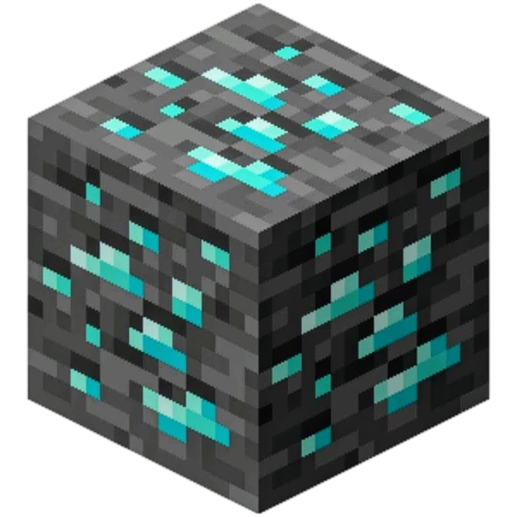
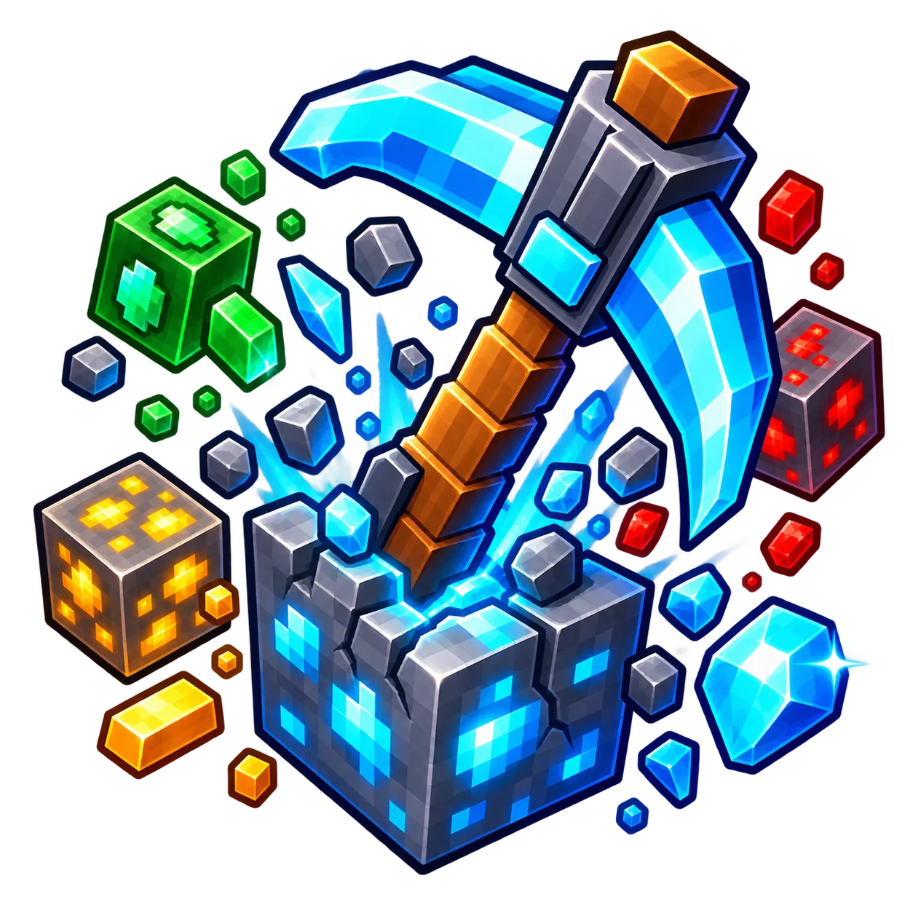

SMASH THE BLOCK 250 FS

Falling Pickaxe — a Minecraft-style slot you can play on your phone
Throw your pickaxe and watch the dirt fly as it smashes through block after block on its way down. Every hit wears down the tool, but a lucky strike can uncover copper, gold, diamonds or emeralds.
As TNT clears the way, the upgrade arrow makes your tool bigger in mid-air, while the workbench turns it into something tougher. A single throw can transform a humble wooden pickaxe into a diamond digging machine — and the deeper it falls, the more loot it gathers.

Key features
Falling Pickaxe mechanics
The falling pickaxe
Once launched, your chosen pickaxe travels downwards, hitting blocks one after another. The round plays out automatically.
Durability
Each hit uses up the tool's HP. When its durability runs out, the current descent ends.
Valuable resources
Copper, gold, diamonds and emeralds can add to the payout. Their value is shown during the round.
TNT
The explosion clears part of the route, letting the pickaxe keep moving without the usual sequence of hits against blocks.
Upgrade arrow
The green arrow enlarges the tool as it falls, changing what it can do along its current route.
Workbench
The workbench reforges your pickaxe into a stronger one. In a single lucky round, a wooden tool can upgrade all the way to diamond.
Tool durability
Four types of pickaxe
HP shows how much durability the tool has left. Every hit reduces it.Wooden
The starting tool, with a small durability reserve.
Every collision with a block wears it down.
Stone
A tougher pickaxe that can withstand more hits on average, giving it a chance to reach deeper.
Iron
Extra durability helps it survive a series of collisions and stay in the mine longer.
Diamond
The most durable starting option shown in the game.
A high HP reserve does not guarantee a result, but gives the tool more durability for its descent.
Deposit and withdrawal
Account and payment information
1. Register — in one click or with your phone number
- Go to the official 1win website.
- Select Register in the top-right corner.
- Choose the Quick tab.
- Enter your country, account currency, phone number and email address, and create a strong password.
- Enter a promo code, if you have one, to receive an extra bonus on your first deposit.
- Select Sign up.
2. How to make a deposit
A general guide to funding your account
- Sign in to your account on the official 1win website or a currently working mirror.
- Select Deposit — the wallet or plus icon — in the top-right corner.
- Choose a payment method from the list automatically offered for your country.
The list usually includes:
- Cards issued by local and international banks, including Visa, Mastercard, MIR and others.
- P2P transfers and fast payment systems (SBP) — the most widely used, versatile way to get around regional banking restrictions.
- E-wallets such as Piastrix, Skrill and MoneyGO, depending on the region.
- Cryptocurrency, including USDT, BTC, ETH and TON — it works in every GEO without exception and often comes with an extra deposit bonus.
- Enter the amount you want to deposit, taking account of the minimum limits shown on screen.
- Confirm the payment: enter the SMS code from your bank or transfer the funds using the payment details or QR code provided. Then wait for the funds to be credited.
Tip
If bank cards are difficult to use in your country, use cryptocurrency, such as the USDT stablecoin. It is the fastest, anonymous and most versatile way to deposit and withdraw funds in any region.
Selected method: {method}. Country currency: {currency}. Follow the instructions for this method in your account cashier.
3. Making a deposit with cryptocurrency
- Sign in on the 1win website or a currently working mirror.
- Select Deposit in the top-right corner.
- Choose Cryptocurrency from the available payment methods.
Commonly offered options include:
- USDT — TRC20, ERC20, BEP20;
- Bitcoin (BTC);
- Ethereum (ETH);
- TON;
- TRX;
- other available coins.
- Choose the specific coin and network.
Important: Take care when choosing the network. For example, USDT TRC20 and USDT ERC20 use different networks.
The network in your sending wallet must match the network on 1win, or your funds could be lost.
TRC20 is usually the most popular and cost-effective network for USDT transfers.
- Copy the payment details.
The system will display a cryptocurrency wallet address or a QR code.
- Make the transfer.
Open your crypto wallet, such as Binance, Bybit, Trust Wallet or Tonkeeper, or the exchange you use for cryptocurrency.
Choose Transfer or Withdraw, paste the copied 1win address or scan the QR code, and enter the amount.
Confirm the transaction. You may need a two-factor authentication (2FA) code or an email verification code.
Useful details and tips
Crypto bonus: 1win often awards an additional deposit bonus when you fund your account with cryptocurrency. Check the current promotion terms in the Bonuses section of the website.
Crediting time: Transfers usually take 2–15 minutes, depending on blockchain congestion and the network selected.
Allow for fees: The blockchain network charges a small transfer fee. For example, a fixed fee may apply to USDT TRC20 transfers on the Tron network. Make sure your wallet balance covers both the deposit amount and this fee.
4. How to find Falling Pickaxe
Step 1. Sign in
Sign in to the official website using your account credentials.
Step 2. Open the games section
Look for 1win Games in the top or side menu. This section brings together the platform's own quick and crash games.
Step 3. Use search
Select the magnifying-glass search icon in the top-right corner of the games section and start typing Falling Pickaxe.
Step 4. Launch the game
Select the game icon when it appears to open it and start playing.
Another way
You can also use the search bar at the very top of the site's main menu, if the platform offers a site-wide search across all casino and game categories.
5. How to withdraw money
Step 1. Open your account area
Sign in to your 1win account and select the profile icon in the top-right corner to open the drop-down menu.
Step 2. Open withdrawals
Choose Withdrawal or Withdraw.
Step 3. Choose a payment system
Select a withdrawal method available in your region:
- a bank card;
- an e-wallet;
- cryptocurrency, such as USDT.
Step 4. Enter the amount and payment details
Enter the amount you want to withdraw, taking account of the system's minimum and maximum limits, and provide the account details.
Step 5. Confirm the withdrawal
Select the confirmation button.
If two-factor authentication is enabled or SMS/email verification is required, enter the verification code.
Processing times
Funds usually reach crypto wallets and electronic payment systems within a few minutes to a couple of hours.
Withdrawals to bank cards can take anywhere from a few minutes to 3 business days, depending on your bank's payment gateways.
Withdrawal methods configured for this country: {methods}. Check availability and instructions in your account.